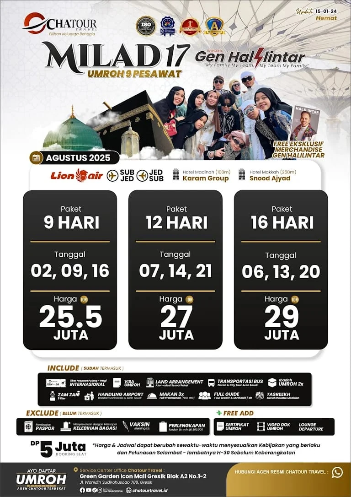
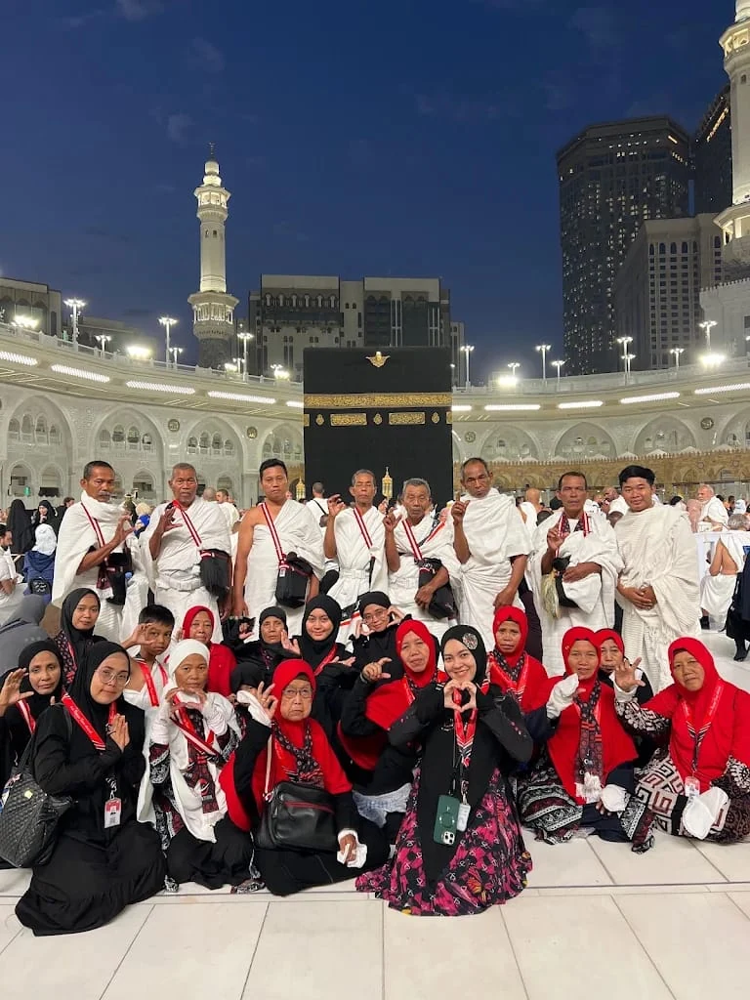
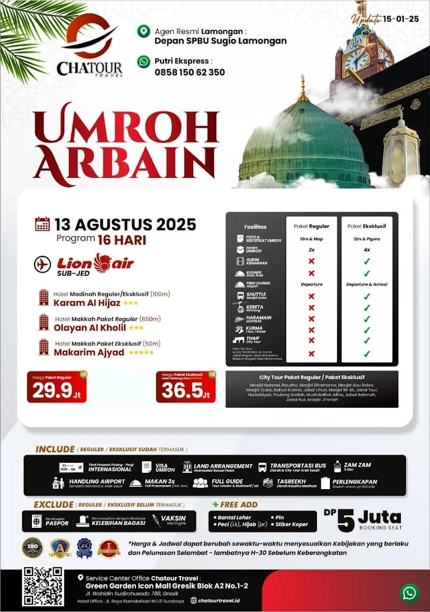
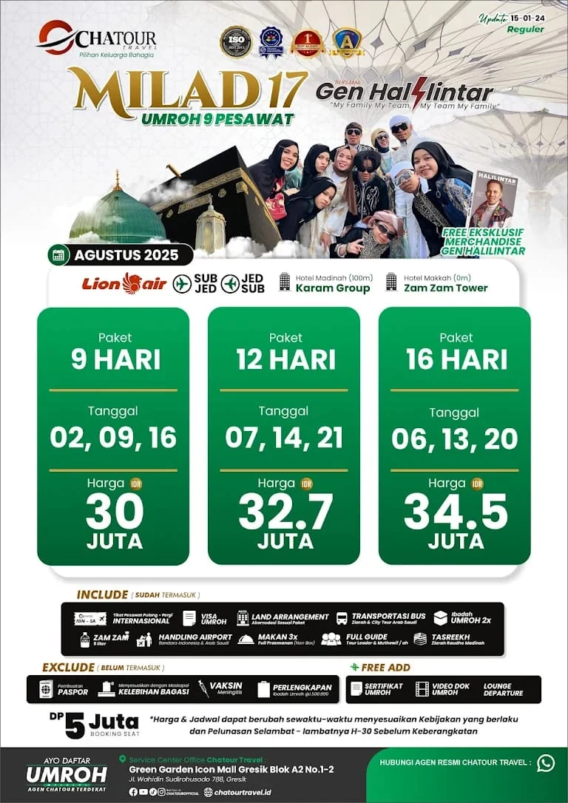

INFORMASI PAKET
Pilihan Paket Umroh
Lihat pilihan jadwal dan detail pada poster, lalu konfirmasi ketersediaan kepada tim kami.
Tanya paket ⟶Temukan informasi perjalanan umroh dan konsultasikan rencana ibadah Anda bersama Chatour Travel.

Chatour Travel melayani calon jamaah di wilayah Lamongan. Anda dapat mengunjungi salah satu dari dua lokasi kantor yang tercantum di bawah untuk mendapatkan informasi perjalanan umroh dan konsultasi.
Kami percaya, perjalanan yang bermakna dimulai dari informasi yang jelas, komunikasi yang baik, dan persiapan yang matang.
Kenali dan hubungi kami ⟶Dapatkan informasi paket dan perjalanan melalui konsultasi langsung.
Hubungi tim Chatour untuk bertanya seputar rencana perjalanan ibadah.
Kunjungi salah satu dari dua lokasi Chatour Travel di Kabupaten Lamongan.
Informasi paket dapat berubah mengikuti jadwal dan ketersediaan. Silakan hubungi Chatour Travel untuk konfirmasi terbaru.

Lihat pilihan jadwal dan detail pada poster, lalu konfirmasi ketersediaan kepada tim kami.
Tanya paket ⟶
Informasi program dan rincian keberangkatan dapat ditanyakan langsung kepada admin.
Tanya program ⟶
Hubungi kami untuk memastikan jadwal, harga, fasilitas, dan ketersediaan paket.
Tanya program ⟶Dokumentasi pilihan dari aset foto Chatour Travel.
Chatour Travel mendapatkan rating 5,0 dari 33 ulasan di Google Maps berdasarkan informasi profil yang dibagikan.
Lihat profil Google Maps ⟶Masih memiliki pertanyaan? Tim Chatour Travel siap membantu memberikan informasi awal mengenai paket dan perjalanan umroh.
Hubungi WhatsApp ↗R7VX+M89, Jalan Raya, Sugio, Kec. Sugio, Kabupaten Lamongan, Jawa Timur 62256
Buka lokasi di Google Maps ↗Profil Google Maps: 5,0 · 33 ulasanJl. Raya Sugihwaras No. 09, RT 01/RW 01, Sugihwaras, Kec. Deket, Kabupaten Lamongan, Jawa Timur 62291
Buka lokasi di Google Maps ↗Profil Google Maps: 4,9 · 14 ulasan